2 Scenario 2: In Depth Modeling and Plotting with Cleaned Data
You are working on a project and have cleaned the data using SAS but you would like to create a summary report using R markdown. The study has eleven covariates and three endpoints: discharge status (alive/deceased), time-to-tvr (tricuspid valve replacement), and time-to-death. The investigator is interested in understanding the relationship of the covariates with the different endpoints. Note that some of the covariates have missing values. Also, the investigator would like to see a figure showing the cumulative incidence of TVR curve.
2.1 Your Mission
Read in dataset “data2.sas7bdat”. This data was cleaned and labelled in SAS, but you may need to modify some of the variables slightly so that they produce the right summaries. For instance, a number of the variables have the SAS format where 1=‘No’ and 2=‘Yes’. The variable
recentmihas four levels:<24 hrs, 1-7 days, >7 days, never. Explore the data and modify the variables as you see fit. Create a list of the variable labels for use in summaries.Investigate the missing data patterns. This could be graphically or with tables.
Create a Kaplan-Meier curve of death for subjects by gender
- Create a time to death variable (difference between dates). Look at a summary of this new variable.
Create a cumulative incidence curve of TVR where death is treated as a competing risk. Steps include:
- Create a time-to-tvr variable
- Stratify the curves by gender
- Create a time-to-tvr variable
Run a linear regression model for bmi with the covariates age and sex. Check the modeling assumptions.
Run logistic models for
dischargestatusand create summary tables for each covariate.- Investigate the
modelsum()function in thearsenalpackage andtidy()in thebroompackage.
- Investigate the
Run Cox models for
tm2lfuand create summary tables for each covariate.- write results to a separate file
- check model assumptions
Perform multiple imputation and rerun the logistic regression models
2.2 Implementation
2.2.1 Read and summarize data
> # Strongly encouraged to set this option!
> options(stringsAsFactors = F)
>
> # Include tidyverse and arsenal to have some basic packages
> library(tidyverse)
> library(arsenal)
>
> # Read in data
> library(haven)
>
> # link to data on GitHub page if not already downloaded
> if (!file.exists("data/dat1.sas7bdat")) {
+ urlfile <- "https://raw.githubusercontent.com/bethatkinson/R_project_recipes/data/dat1.sas7bdat"
+ if (!dir.exists("data"))
+ dir.create("data")
+ download.file(urlfile, destfile = "data/dat1.sas7bdat")
+ }
>
> d1 <- read_sas("data/data2.sas7bdat")
> names(d1)
[1] "AGE" "RECENTMI" "cardioshock" "DIABETES"
[5] "hypertension" "BMI" "currsmoker" "msrenaldis"
[9] "numdisvessels" "intrapostmi" "dischargestatus" "S_DEATH"
[13] "S_TVR" "ID" "DT_INDEX" "DT_DEATH"
[17] "DT_TVR" "DT_LFU" "gender" Sometimes variable names have mixed cases, have underscores, or even spaces (especially if reading in data from Excel). The
make.names function removes special characters and spaces from variables names. The option allow_ turns underscores to periods. The tolower function changes text so that they are all lowercase.
> # Change variable names to all lowercase and change underscores to '.'
> names(d1) <- tolower(make.names(names(d1), allow_ = F))
> names(d1)
[1] "age" "recentmi" "cardioshock" "diabetes"
[5] "hypertension" "bmi" "currsmoker" "msrenaldis"
[9] "numdisvessels" "intrapostmi" "dischargestatus" "s.death"
[13] "s.tvr" "id" "dt.index" "dt.death"
[17] "dt.tvr" "dt.lfu" "gender"
>
> # quick exploration of data
> library(summarytools)
Registered S3 method overwritten by 'pryr':
method from
print.bytes Rcpp
Warning in fun(libname, pkgname): couldn't connect to display ":0"
system might not have X11 capabilities; in case of errors when using dfSummary(), set st_options(use.x11 = FALSE)
Attaching package: 'summarytools'
The following object is masked from 'package:tibble':
view
> dfSummary(d1, graph.col = FALSE)
Data Frame Summary
d1
Dimensions: 2000 x 19
Duplicates: 0
--------------------------------------------------------------------------------------------------------------------------------
No Variable Label Stats / Values Freqs (% of Valid) Valid Missing
---- ----------------- ------------------------------- ---------------------------- ---------------------- ---------- ----------
1 age Age, yrs Mean (sd) : 66.6 (12.1) 65 distinct values 2000 0
[numeric] min < med < max: (100%) (0%)
25 < 67 < 98
IQR (CV) : 18 (0.2)
2 recentmi Recent MI Mean (sd) : 2.8 (1.2) 1 : 417 (21.1%) 1972 28
[numeric] min < med < max: 2 : 319 (16.2%) (98.6%) (1.4%)
1 < 3 < 4 3 : 404 (20.5%)
IQR (CV) : 2 (0.4) 4 : 832 (42.2%)
3 cardioshock Cardiogenic shock Min : 1 1 : 1920 (96.2%) 1996 4
[numeric] Mean : 1 2 : 76 ( 3.8%) (99.8%) (0.2%)
Max : 2
4 diabetes Diabetes mellitus Min : 1 1 : 1408 (71.0%) 1984 16
[numeric] Mean : 1.3 2 : 576 (29.0%) (99.2%) (0.8%)
Max : 2
5 hypertension Hypertension Min : 1 1 : 359 (18.6%) 1928 72
[numeric] Mean : 1.8 2 : 1569 (81.4%) (96.4%) (3.6%)
Max : 2
6 bmi Body Mass Index (kg/sq.m) Mean (sd) : 30.3 (6.1) 1215 distinct values 1987 13
[numeric] min < med < max: (99.35%) (0.65%)
14.3 < 29.4 < 65.4
IQR (CV) : 7.5 (0.2)
7 currsmoker Current Smoker Min : 1 1 : 1586 (82.1%) 1932 68
[numeric] Mean : 1.2 2 : 346 (17.9%) (96.6%) (3.4%)
Max : 2
8 msrenaldis Moderate/Severe renal disease Min : 1 1 : 1889 (95.4%) 1980 20
[numeric] Mean : 1 2 : 91 ( 4.6%) (99%) (1%)
Max : 2
9 numdisvessels Number of diseased vessels Mean (sd) : 1.7 (0.9) 0 : 57 ( 2.9%) 1982 18
[numeric] min < med < max: 1 : 898 (45.3%) (99.1%) (0.9%)
0 < 2 < 3 2 : 528 (26.6%)
IQR (CV) : 2 (0.5) 3 : 499 (25.2%)
10 intrapostmi MI complication (PTCA Reg) Min : 1 1 : 1925 (96.2%) 2000 0
[numeric] Mean : 1 2 : 75 ( 3.8%) (100%) (0%)
Max : 2
11 dischargestatus In-hospital death Min : 1 1 : 1976 (98.8%) 2000 0
[numeric] Mean : 1 2 : 24 ( 1.2%) (100%) (0%)
Max : 2
12 s.death Death Status Min : 0 0 : 1392 (69.6%) 2000 0
[numeric] Mean : 0.3 1 : 608 (30.4%) (100%) (0%)
Max : 1
13 s.tvr TVR Status Min : 0 0 : 1579 (79.0%) 2000 0
[numeric] Mean : 0.2 1 : 421 (21.1%) (100%) (0%)
Max : 1
14 id Sample ID no. Mean (sd) : 1000.5 (577.5) 2000 distinct values 2000 0
[numeric] min < med < max: (100%) (0%)
1 < 1000.5 < 2000
IQR (CV) : 999.5 (0.6)
15 dt.index Baseline date min : 1990-01-02 1689 distinct values 2000 0
[Date] med : 1997-11-06 (100%) (0%)
max : 2005-12-28
range : 15y 11m 26d
16 dt.death Death date min : 1990-05-01 588 distinct values 608 1392
[Date] med : 2001-04-22 (30.4%) (69.6%)
max : 2014-11-12
range : 24y 6m 11d
17 dt.tvr TVR date min : 1990-02-02 403 distinct values 421 1579
[Date] med : 2001-05-15 (21.05%) (78.95%)
max : 2015-09-19
range : 25y 7m 17d
18 dt.lfu LFU date min : 1990-03-31 1767 distinct values 2000 0
[Date] med : 2003-01-12 (100%) (0%)
max : 2017-10-10
range : 27y 6m 10d
19 gender Gender 1. Female 588 (29.4%) 2000 0
[character] 2. Male 1412 (70.6%) (100%) (0%)
--------------------------------------------------------------------------------------------------------------------------------There are several variables that are coded as numbers that we want treated as factors with descriptive values (e.g. No/Yes). The code below loops over all of these No/Yes variables and changes the variables to factors. Tip: this code only works if you specify the variables using d1[[i]]. It will not work if you use d1[,i].
> # Change variables with the values 1/2 to formats with the values No/Yes. Note
> # the use of d1[[i]] to indicate each variable
> ynvars <- c("cardioshock", "diabetes", "hypertension", "currsmoker", "msrenaldis",
+ "intrapostmi")
> for (i in ynvars) d1[[i]] <- factor(d1[[i]], levels = 1:2, labels = c("No", "Yes"))Now create some other factors.
> # Change discharge status variable to Alive/Deceased
> d1$dischargestatus <- factor(d1$dischargestatus, levels = 1:2, labels = c("Alive",
+ "Deceased"))In the code below, the level ‘Never’ was moved to the first position so that it can serve as the reference group in models. In models, R by default uses the first level as the reference.
> # Chance order of recentmi levels
> d1$recentmi <- factor(d1$recentmi, levels = 4:1, labels = c("Never", ">7 days", "1-7 days",
+ "<24 hrs"), ordered = TRUE)This next section of code is a bit tricky, but it demonstrates how to create a mapping between variable labels and variable names, which is useful for tableby and plotting. There are several different functions introduced here including sapply, unlist, and function(x).
Step 1 essentially takes a dataframe (which is a special type of list), then it uses the sapply function to look at each element in the list (here, each variable) and extracts the label. Finally it takes the results and changes them to be a vector.
Step 5 uses the filter() function which is a part of the dplyr package. It keeps all observations where the labels variable is missing, as determined by is.na().
> # 1. Pull all available labels arsenal has the function labels that extracts all
> # labels in the df
> d1_labels <- labels(d1)
>
> # 2. Identify which variables don't have a label Which variables are missing
> names(d1)[names(d1) %nin% names(unlist(d1_labels))]
[1] "recentmi" "cardioshock" "diabetes" "hypertension"
[5] "currsmoker" "msrenaldis" "intrapostmi" "dischargestatus"
>
> # 3. Add labels to those variables
> d1_labels$cardioshock <- "Cardiogenic shock"
> d1_labels$currsmoker <- "Current smoker"
> d1_labels$diabetes <- "Diabetes mellitus"
> d1_labels$dischargestatus <- "In-hospital death"
> d1_labels$hypertension <- "Hypertension"
> d1_labels$intrapostmi <- "MI complication"
> d1_labels$msrenaldis <- "Moderate/Severe renal disease"
> d1_labels$recentmi <- "Recent MI"
>
> # create a vector of covariates
> covar <- c("age", "gender", "recentmi", "cardioshock", "diabetes", "hypertension",
+ "bmi", "currsmoker", "msrenaldis", "numdisvessels", "intrapostmi")2.2.2 Investigate missing data
From the dfsummary it is apparent that there is some missing data. Before doing any modeling, it would be helpful to better understand the missingness patterns. The apply() function is helpful in that it takes a matrix or dataframe, and does something to each row (MARGIN=1) or column (MARGIN=2). In this case, it uses the function sum() to summarize the number of missings found in the dataframe is.na(d1).
> # How many missing values are there for each variable?
> tmp <- is.na(d1)
> head(tmp)
age recentmi cardioshock diabetes hypertension bmi currsmoker
[1,] FALSE FALSE FALSE FALSE FALSE FALSE FALSE
[2,] FALSE FALSE FALSE FALSE FALSE FALSE FALSE
[3,] FALSE FALSE FALSE FALSE FALSE FALSE FALSE
[4,] FALSE FALSE FALSE FALSE FALSE FALSE FALSE
[5,] FALSE FALSE FALSE FALSE FALSE FALSE FALSE
[6,] FALSE FALSE FALSE FALSE FALSE FALSE FALSE
msrenaldis numdisvessels intrapostmi dischargestatus s.death s.tvr id
[1,] FALSE FALSE FALSE FALSE FALSE FALSE FALSE
[2,] FALSE FALSE FALSE FALSE FALSE FALSE FALSE
[3,] FALSE FALSE FALSE FALSE FALSE FALSE FALSE
[4,] FALSE FALSE FALSE FALSE FALSE FALSE FALSE
[5,] FALSE FALSE FALSE FALSE FALSE FALSE FALSE
[6,] FALSE FALSE FALSE FALSE FALSE FALSE FALSE
dt.index dt.death dt.tvr dt.lfu gender
[1,] FALSE TRUE TRUE FALSE FALSE
[2,] FALSE TRUE TRUE FALSE FALSE
[3,] FALSE TRUE TRUE FALSE FALSE
[4,] FALSE TRUE TRUE FALSE FALSE
[5,] FALSE TRUE TRUE FALSE FALSE
[6,] FALSE TRUE TRUE FALSE FALSE
> sum(tmp[, 2]) # look at 1 variable
[1] 28
> apply(tmp, MARGIN = 2, FUN = sum) # use apply to examine all variables
age recentmi cardioshock diabetes hypertension
0 28 4 16 72
bmi currsmoker msrenaldis numdisvessels intrapostmi
13 68 20 18 0
dischargestatus s.death s.tvr id dt.index
0 0 0 0 0
dt.death dt.tvr dt.lfu gender
1392 1579 0 0
>
> # What is the distribution of missing values by subject?
> sum(tmp[2, ]) # look at 1 subject
[1] 2
> subj.na <- apply(tmp, MARGIN = 1, FUN = sum) # use apply to examine all subjects
> table(subj.na)
subj.na
0 1 2 3 4 5
99 733 1042 115 7 4
>
> # Repeat, but only include covariates
> subj.na <- apply(is.na(d1[, covar]), MARGIN = 1, FUN = sum)
> table(subj.na)
subj.na
0 1 2 3 4
1785 198 13 1 3 There are a number of different packages available to visually explore missing data. The code below illustrates one package called naniar written by Nick Tierney.
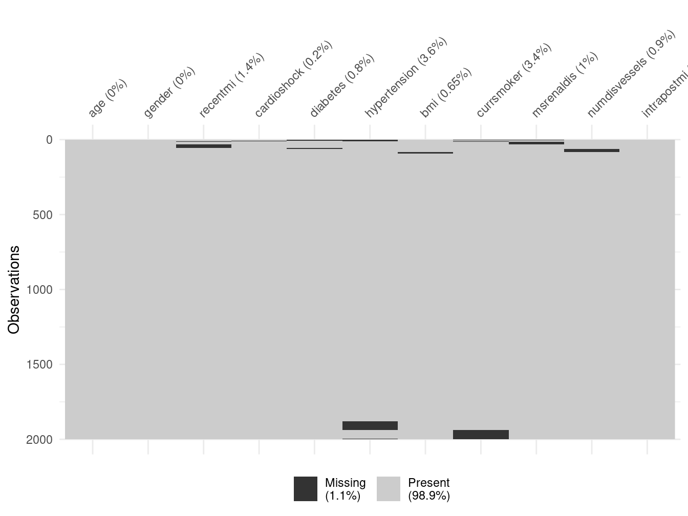

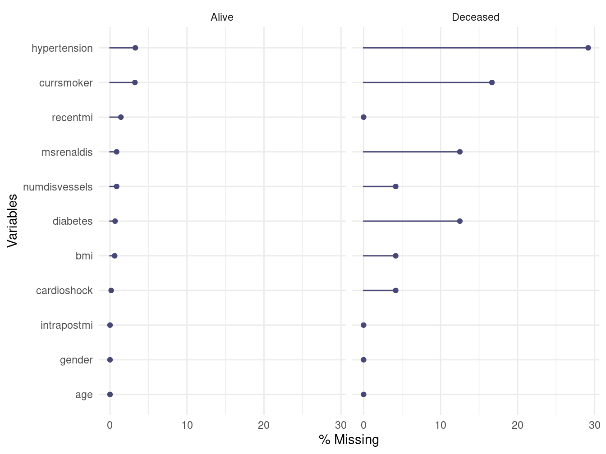
Classification trees using the package rpart can also sometimes be helpful when looking for missingness patterns, especially if you want to understand why a particular variable is missing and whether it is related to any other variable.
> library(rpart)
> library(rpart.plot)
>
> # determine what is associated with missing information about hypertension
> fit <- rpart(is.na(hypertension) ~ ., data = d1, method = "class", minsplit = 10)
> printcp(fit)
Classification tree:
rpart(formula = is.na(hypertension) ~ ., data = d1, method = "class",
minsplit = 10)
Variables actually used in tree construction:
[1] age cardioshock dischargestatus dt.index
[5] dt.lfu id recentmi
Root node error: 72/2000 = 0.036
n= 2000
CP nsplit rel error xerror xstd
1 0.013889 0 1.00000 1.0000 0.11571
2 0.010417 4 0.93056 1.0694 0.11951
3 0.010000 8 0.88889 1.0694 0.11951
> rpart.plot(fit, type = 2, extra = 101)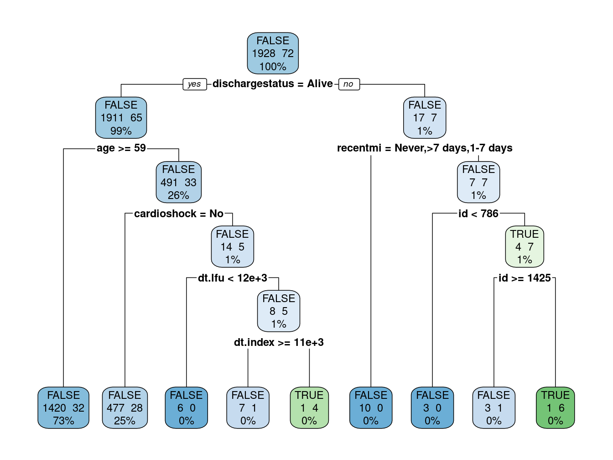
Running rpart() with the default settings didn’t create any splits because it requires 20 subjects in a node before any splits can be made (minsplit option). Based on the printcp() summary, it appears that 4 splits are necessary to gain much of an improvement in the classification error. The plot suggests that there might be more missingness for those who were alive at discharge and were age 58+.
For now, we are going to proceed, recognizing that missingness is an issue.
2.2.3 Kaplan-Meier
In order to create a KM curve we need time variables and right now we just have dates.
> # First attempt - days from Index Date to LFU Date
> d1$tm2death <- d1$dt.lfu - d1$dt.index
> summary(d1$tm2death)
Length Class Mode
2000 difftime numeric
> # This is not so helpful, because subtracting dates creates an object of class
> # 'difftime' Instead, let's make a numeric object
> d1$tm2death <- as.numeric(d1$dt.lfu - d1$dt.index)
> summary(d1$tm2death)
Min. 1st Qu. Median Mean 3rd Qu. Max.
1.0 981.2 1862.0 1915.8 2653.2 4598.0
>
> # Create a default KM curve
> library(survival)
> fit <- survfit(Surv(tm2death, s.death) ~ gender, data = d1)
> plot(fit, col = 1:2, lty = 1:2, xscale = 365.25, xlab = "Follow-up, years", ylab = "Probability of Survival")
> legend("topright", legend = c("Female", "Male"), col = 1:2, lty = 1:2, bty = "n")
>
> # If you want the survival estimates at specific time points, use the summary
> # function
> summary(fit, times = 365.25 * 0:10)
Call: survfit(formula = Surv(tm2death, s.death) ~ gender, data = d1)
gender=Female
time n.risk n.event survival std.err lower 95% CI upper 95% CI
0 588 0 1.000 0.0000 1.000 1.000
365 514 50 0.913 0.0117 0.891 0.937
730 480 20 0.877 0.0137 0.851 0.905
1096 438 22 0.836 0.0157 0.806 0.867
1461 364 26 0.783 0.0178 0.749 0.819
1826 306 31 0.713 0.0202 0.674 0.753
2192 249 23 0.654 0.0220 0.612 0.698
2557 202 13 0.617 0.0230 0.573 0.663
2922 141 10 0.578 0.0246 0.532 0.629
3287 118 7 0.549 0.0257 0.501 0.602
3652 46 4 0.514 0.0299 0.458 0.576
gender=Male
time n.risk n.event survival std.err lower 95% CI upper 95% CI
0 1412 0 1.000 0.00000 1.000 1.000
365 1225 111 0.919 0.00735 0.905 0.934
730 1132 52 0.880 0.00886 0.862 0.897
1096 1014 54 0.836 0.01021 0.816 0.856
1461 895 40 0.802 0.01115 0.780 0.824
1826 748 41 0.762 0.01218 0.739 0.786
2192 610 38 0.719 0.01334 0.694 0.746
2557 502 24 0.689 0.01416 0.662 0.717
2922 295 23 0.643 0.01615 0.612 0.675
3287 247 10 0.620 0.01714 0.587 0.654
3652 110 6 0.592 0.01983 0.554 0.632
>
> # Fancier plot including table indicating number at risk
> library(survminer)
Loading required package: ggpubr
Loading required package: magrittr
Warning: package 'magrittr' was built under R version 4.0.2
Attaching package: 'magrittr'
The following object is masked from 'package:purrr':
set_names
The following object is masked from 'package:tidyr':
extract
>
> ggsurvplot(fit, risk.table = TRUE, pval = TRUE, censor = FALSE, xscale = 365.25,
+ break.time.by = 5 * 365.25)
Warning: Vectorized input to `element_text()` is not officially supported.
Results may be unexpected or may change in future versions of ggplot2.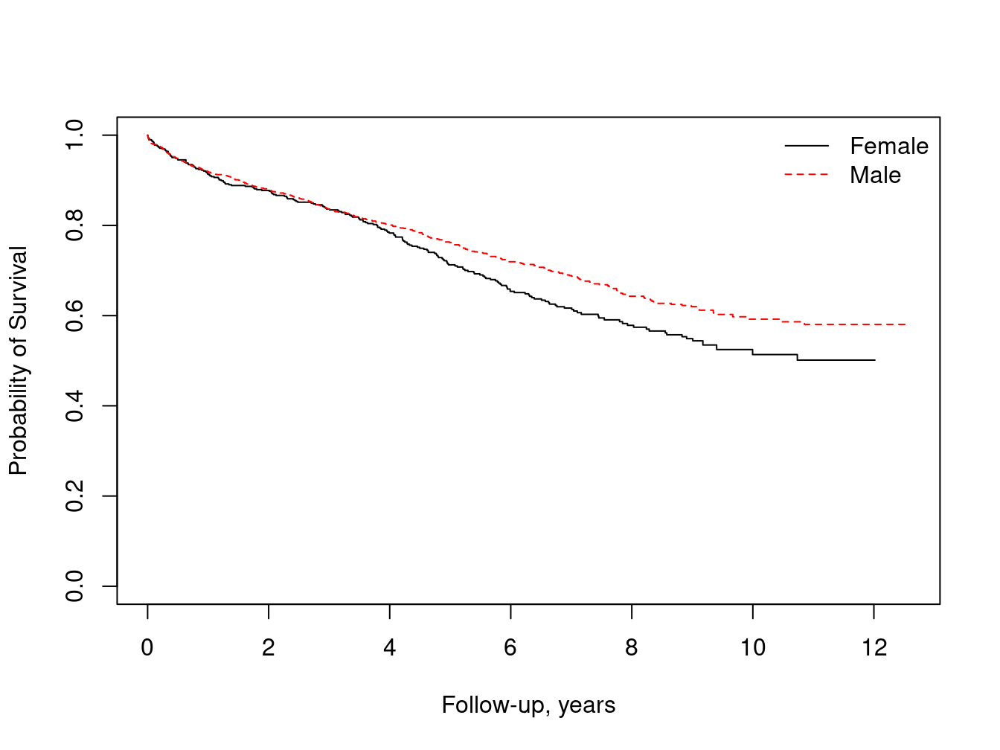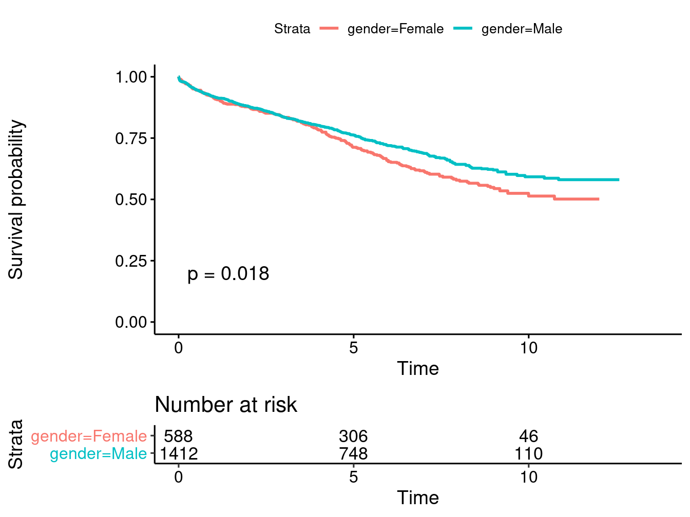
2.2.4 Cumulative Incidence
Now look at the time to TVR where death is treated as a competing risk.
> # Create time to TVR (if event) or LFU The pmin function estimates the smallest
> # value, by row, not including missings
> d1$tm2tvr <- as.numeric(pmin(d1$dt.tvr, d1$dt.lfu, na.rm = T) - d1$dt.index)
>
> # Create event variable with 3 levels: censor, TVR, death
> with(d1, table(death = s.death, tvr = s.tvr))
tvr
death 0 1
0 1078 314
1 501 107
> d1$event <- with(d1, ifelse(s.tvr == 0, 2 * s.death, 1))
> table(d1$event)
0 1 2
1078 421 501
> # In order to do competing risks, the status variable must be a factor
> d1$event <- factor(d1$event, levels = 0:2, labels = c("censor", "tvr", "death"))
>
> # confirm coding makes sense
> library(arsenal)
> summary(freqlist(table(new_event = d1$event, tvr = d1$s.tvr, death = d1$s.death)))
|new_event |tvr |death | Freq| Cumulative Freq| Percent| Cumulative Percent|
|:---------|:---|:-----|----:|---------------:|-------:|------------------:|
|censor |0 |0 | 1078| 1078| 53.90| 53.90|
|tvr |1 |0 | 314| 1392| 15.70| 69.60|
| | |1 | 107| 1499| 5.35| 74.95|
|death |0 |1 | 501| 2000| 25.05| 100.00|
>
> # Fit the cumulative incidence curves
> fit <- survfit(Surv(tm2tvr, event) ~ gender, data = d1)
> fit
Call: survfit(formula = Surv(tm2tvr, event) ~ gender, data = d1)
n nevent rmean*
gender=Female, (s0) 588 0 2658.4914
gender=Male, (s0) 1412 0 2755.6290
gender=Female, tvr 588 102 803.9427
gender=Male, tvr 1412 319 945.0840
gender=Female, death 588 177 1135.5658
gender=Male, death 1412 324 897.2870
*mean time in state, restricted (max time = 4598 )
> plot(fit, col = c(1, 1, 2, 2), lty = c(2, 1, 2, 1), xscale = 365.25, xlab = "Follow-up, years",
+ ylab = "Probability")
> legend("topleft", c("female: tvr", "male: tvr", "female: death", "male: death"),
+ lty = c(2, 1, 2, 1), col = c(1, 1, 2, 2), bty = "n")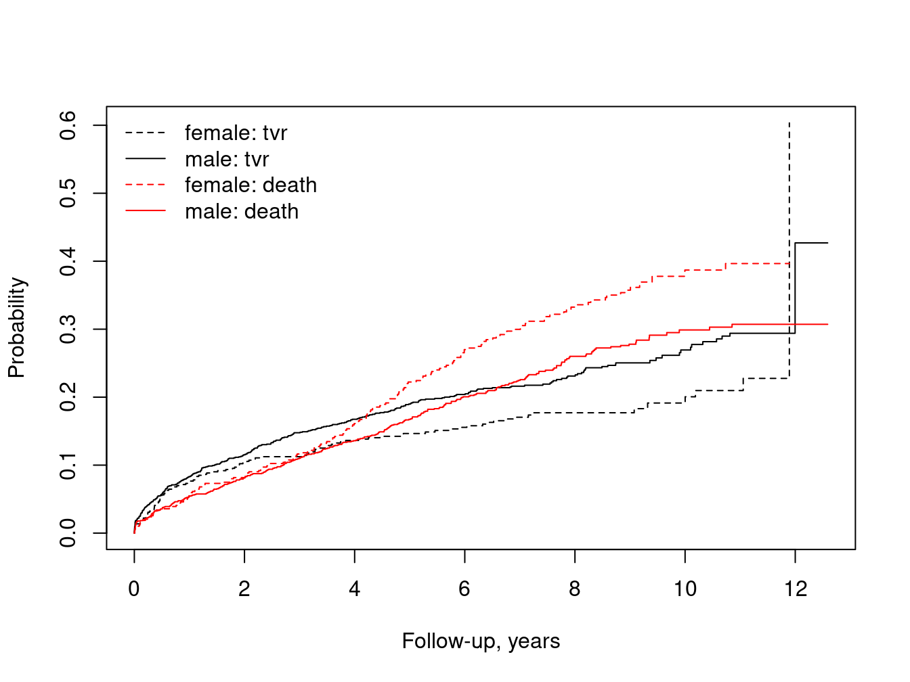
>
> ## look at only certain portions of the survfit object rows=strata, columns=states
> dim(fit)
strata states
2 3
> fit$strata
gender=Female gender=Male
499 1020
> fit$states
[1] "(s0)" "tvr" "death"
>
> # re-plot, just including tvr
> fit2 <- fit[, 2]
> fit2 # confirm that this just picks up the tvr events
Call: survfit(formula = Surv(tm2tvr, event) ~ gender, data = d1)
n nevent rmean*
gender=Female, tvr 588 102 803.9427
gender=Male, tvr 1412 319 945.0840
*mean time in state, restricted (max time = 4598 )
>
> plot(fit2, col = 1:2, lty = 1:2, xscale = 365.25, xlab = "Follow-up, years", ylab = "Cumulative Incidence of TVR",
+ xmax = 11 * 365.25)
> legend("topleft", legend = c("Female", "Male"), col = 1:2, lty = 1:2, bty = "n")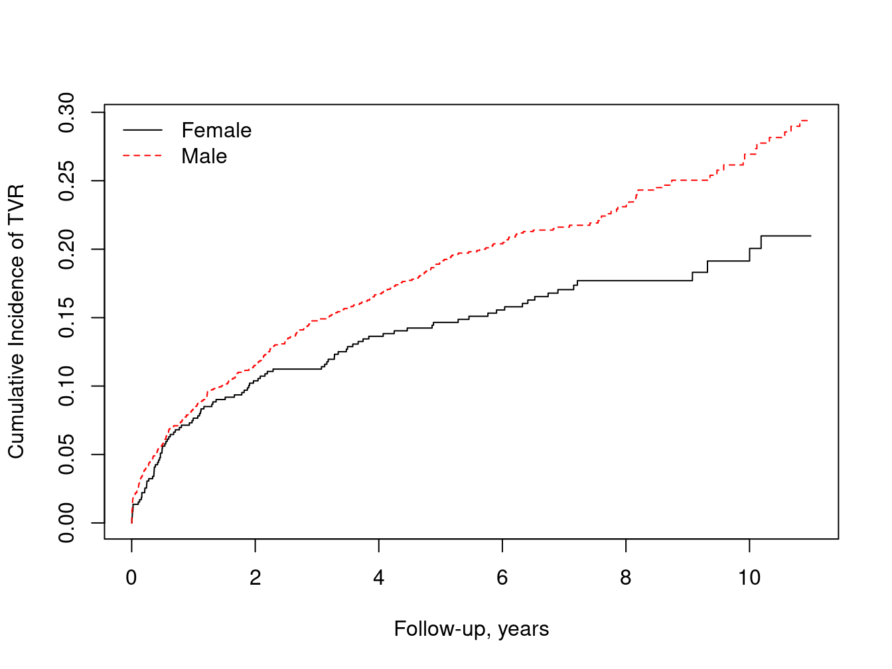
2.2.5 Linear regression model
Assess how BMI differs by age and gender, then check the model assumptions. Don’t assume that the functional form for age is linear. The splines package includes the natural splines function ns.
> library(splines) # needed to load the ns() function
> fit <- lm(bmi ~ ns(age, df = 3) + gender, data = d1)
> summary(fit)
Call:
lm(formula = bmi ~ ns(age, df = 3) + gender, data = d1)
Residuals:
Min 1Q Median 3Q Max
-17.284 -4.034 -0.870 3.178 33.668
Coefficients:
Estimate Std. Error t value Pr(>|t|)
(Intercept) 30.7571 1.5463 19.891 < 2e-16 ***
ns(age, df = 3)1 -1.3705 0.8080 -1.696 0.0900 .
ns(age, df = 3)2 -1.9786 3.4576 -0.572 0.5672
ns(age, df = 3)3 -7.3226 1.2885 -5.683 1.52e-08 ***
genderMale -0.6195 0.2977 -2.081 0.0376 *
---
Signif. codes: 0 '***' 0.001 '**' 0.01 '*' 0.05 '.' 0.1 ' ' 1
Residual standard error: 5.945 on 1982 degrees of freedom
(13 observations deleted due to missingness)
Multiple R-squared: 0.05133, Adjusted R-squared: 0.04942
F-statistic: 26.81 on 4 and 1982 DF, p-value: < 2.2e-16
>
> # plot the curvature
> termplot(fit, term = 1, se = T, rug = T)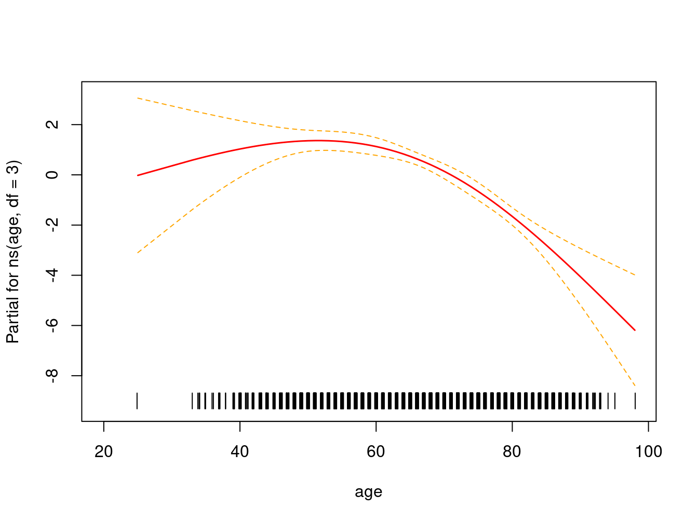
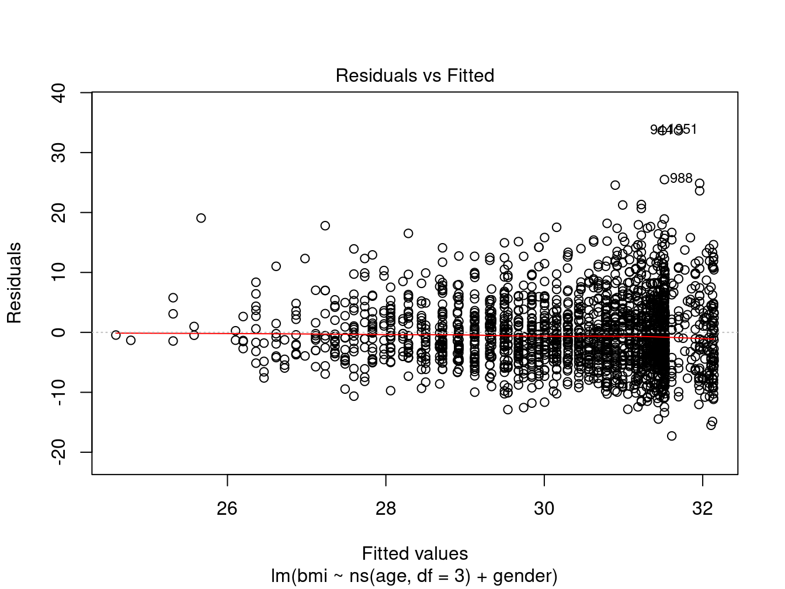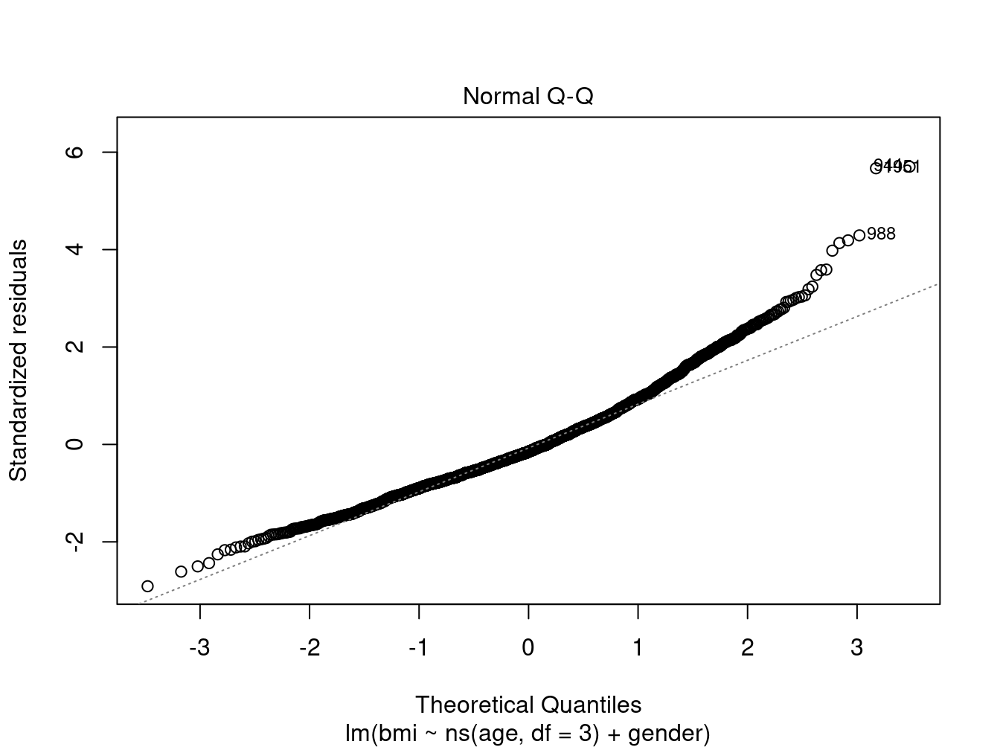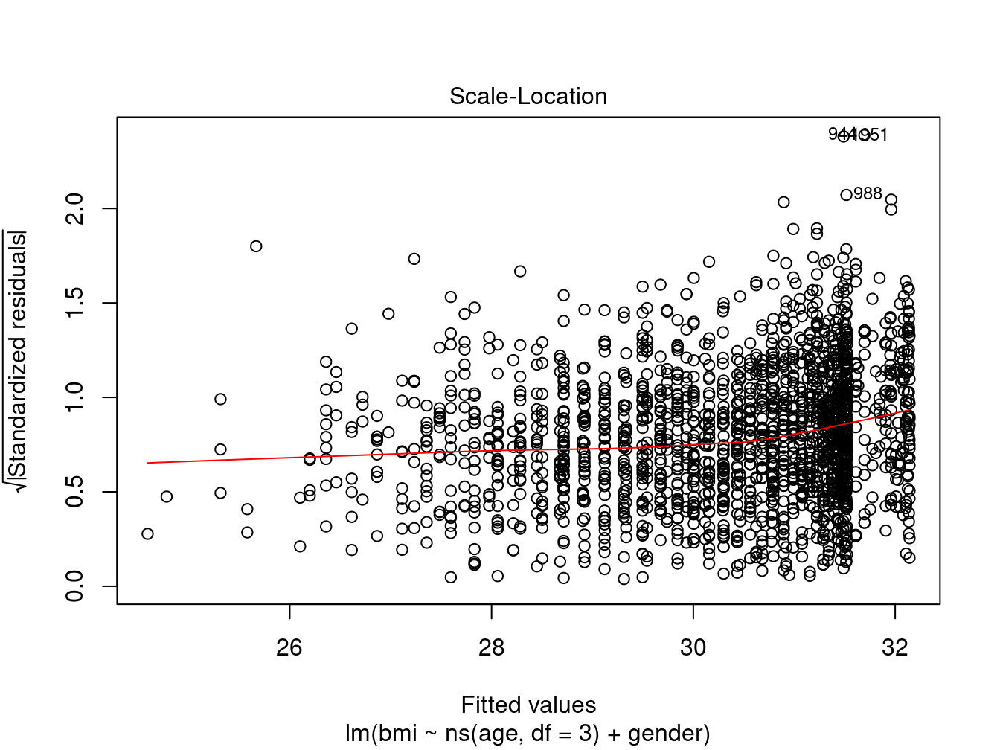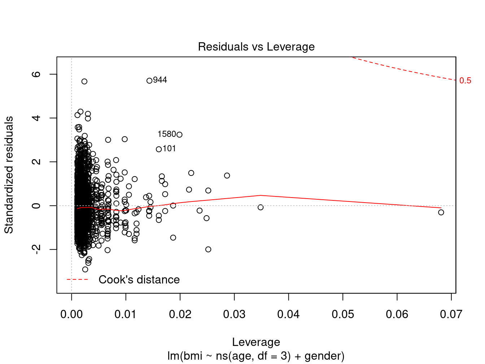
>
> # summarize residuals
> summary(resid(fit))
Min. 1st Qu. Median Mean 3rd Qu. Max.
-17.2845 -4.0336 -0.8697 0.0000 3.1778 33.6684 The following code plots the relationship between age and BMI separately for males and females with a smoother through the points, providing further insight into the data.
> ggplot(d1, aes(x = age, y = bmi)) + geom_point(alpha = 0.1) + geom_smooth(span = 1) +
+ facet_wrap(~gender)
`geom_smooth()` using method = 'gam' and formula 'y ~ s(x, bs = "cs")'
Warning: Removed 13 rows containing non-finite values (stat_smooth).
Warning: Removed 13 rows containing missing values (geom_point).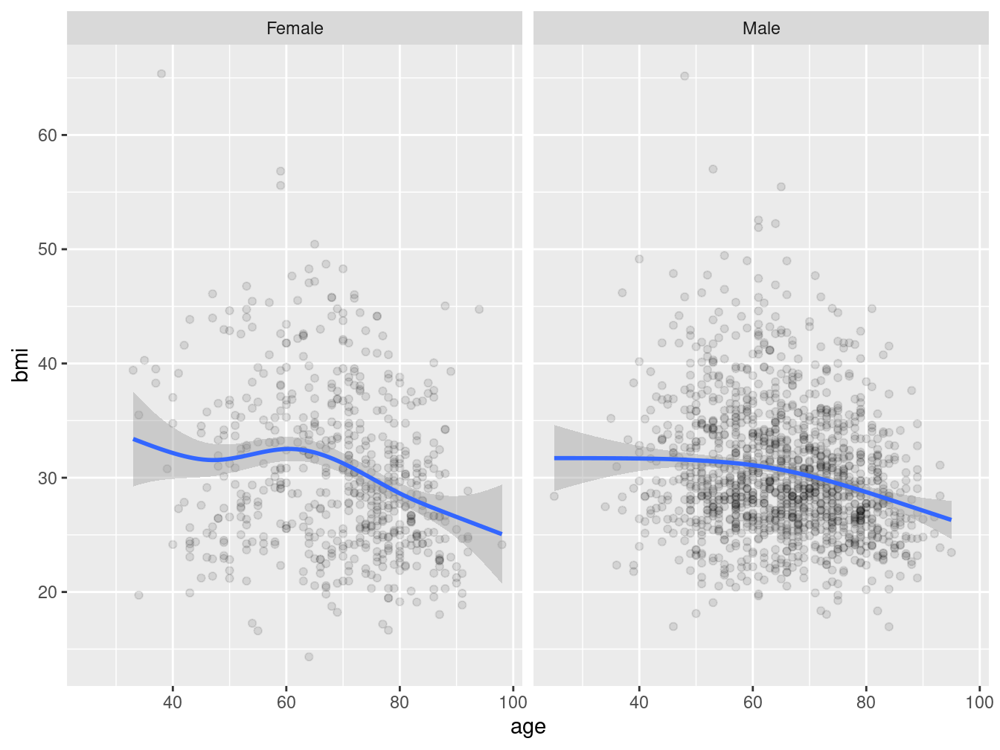
2.2.6 Logistic regression models
Assess which risk factors predict the discharge status: dischargestatus.
> d1$dischargestatus01 <- as.numeric(d1$dischargestatus) - 1
> with(d1, table(dischargestatus01, dischargestatus))
dischargestatus
dischargestatus01 Alive Deceased
0 1976 0
1 0 24
>
> # Look at a simple model: the association between gender and in-hospital death
> fit3 <- glm(dischargestatus01 ~ gender, data = d1, family = "binomial")
> summary(fit3)
Call:
glm(formula = dischargestatus01 ~ gender, family = "binomial",
data = d1)
Deviance Residuals:
Min 1Q Median 3Q Max
-0.1689 -0.1689 -0.1689 -0.1168 3.1593
Coefficients:
Estimate Std. Error z value Pr(>|z|)
(Intercept) -4.9836 0.5016 -9.935 <2e-16 ***
genderMale 0.7408 0.5499 1.347 0.178
---
Signif. codes: 0 '***' 0.001 '**' 0.01 '*' 0.05 '.' 0.1 ' ' 1
(Dispersion parameter for binomial family taken to be 1)
Null deviance: 260.01 on 1999 degrees of freedom
Residual deviance: 257.89 on 1998 degrees of freedom
AIC: 261.89
Number of Fisher Scoring iterations: 7The broom package allows users to extract information from a model and save it as a data.frame. The two main functions in broom are tidy(), which returns a tidy version of the model coefficients, and glance() which returns a one-row glance at the model’s statistics. There is also the function augment() which augments the original data with information such as the fitted values and residuals.
> # Look at a tidy model summary (data frame)
> library(broom)
> # 'exponentiate=TRUE' exponentiates the estimates, including the intercept
> tmp <- tidy(fit3, exponentiate = TRUE, conf.int = TRUE)
> print(tmp, digits = 3)
# A tibble: 2 x 7
term estimate std.error statistic p.value conf.low conf.high
<chr> <dbl> <dbl> <dbl> <dbl> <dbl> <dbl>
1 (Intercept) 0.00685 0.502 -9.93 2.94e-23 0.00212 0.0160
2 genderMale 2.10 0.550 1.35 1.78e- 1 0.790 7.24
> # Remove the intercept line
> print(tmp[-1, ], digits = 3)
# A tibble: 1 x 7
term estimate std.error statistic p.value conf.low conf.high
<chr> <dbl> <dbl> <dbl> <dbl> <dbl> <dbl>
1 genderMale 2.10 0.550 1.35 0.178 0.790 7.24
> glance(fit3)
# A tibble: 1 x 7
null.deviance df.null logLik AIC BIC deviance df.residual
<dbl> <int> <dbl> <dbl> <dbl> <dbl> <int>
1 260. 1999 -129. 262. 273. 258. 1998This is fine for a small number of models, but if you want to summarize results for multiple models, perhaps adjusting for a certain set of covariates, then it is time to use a different tool. The modelsum() in arsenal creates such summaries. For logistic regression models (family='binomial'), the results are automatically shown with odd’s ratios and confidence intervals, plus the concordance (AUC) value and the number of missing values for that variable.
> # Use formulize in arsenal to create a formula to pass to modelsum
> myform <- formulize(y = "dischargestatus01", x = covar)
> tmp <- modelsum(myform, family = "binomial", data = d1)
> summary(tmp, show.intercept = F, title = "Hospital Discharge: Univariate analysis")| OR | CI.lower.OR | CI.upper.OR | p.value | concordance | Nmiss | |
|---|---|---|---|---|---|---|
| Age, yrs | 1.020 | 0.986 | 1.057 | 0.259 | 0.555 | 0 |
| Gender Male | 2.098 | 0.790 | 7.236 | 0.178 | 0.564 | 0 |
| recentmi .L | 5.914 | 2.554 | 16.883 | < 0.001 | 0.742 | 28 |
| recentmi .Q | 1.260 | 0.452 | 3.903 | 0.662 | ||
| recentmi .C | 0.760 | 0.201 | 2.227 | 0.637 | ||
| cardioshock Yes | 91.915 | 36.761 | 262.524 | < 0.001 | 0.855 | 4 |
| diabetes Yes | 0.978 | 0.347 | 2.418 | 0.963 | 0.502 | 16 |
| hypertension Yes | 0.415 | 0.157 | 1.213 | 0.086 | 0.584 | 72 |
| Body Mass Index (kg/sq.m) | 0.934 | 0.860 | 1.007 | 0.094 | 0.588 | 13 |
| currsmoker Yes | 1.982 | 0.697 | 4.978 | 0.164 | 0.561 | 68 |
| msrenaldis Yes | 1.038 | 0.058 | 5.067 | 0.971 | 0.501 | 20 |
| Number of diseased vessels | 1.407 | 0.880 | 2.270 | 0.154 | 0.577 | 18 |
| intrapostmi Yes | 2.370 | 0.375 | 8.251 | 0.249 | 0.523 | 0 |
>
> # Note - because recentmi is an ordered factor, R tries to model it with
> # Linear/Quadradic/Cubic. Try creating covar2 - see the difference
> covar2 <- c("age", "gender", "as.numeric(recentmi)", "cardioshock", "diabetes", "hypertension",
+ "bmi", "currsmoker", "msrenaldis", "numdisvessels", "intrapostmi")
> myform2 <- formulize(y = "dischargestatus01", x = covar2)
> tmp2 <- modelsum(myform2, family = "binomial", data = d1)
> summary(tmp2, show.intercept = F, title = "Hospital Discharge: Univariate analysis")| OR | CI.lower.OR | CI.upper.OR | p.value | concordance | Nmiss | |
|---|---|---|---|---|---|---|
| Age, yrs | 1.020 | 0.986 | 1.057 | 0.259 | 0.555 | 0 |
| Gender Male | 2.098 | 0.790 | 7.236 | 0.178 | 0.564 | 0 |
| as.numeric(recentmi) | 2.236 | 1.547 | 3.426 | < 0.001 | 0.742 | 28 |
| cardioshock Yes | 91.915 | 36.761 | 262.524 | < 0.001 | 0.855 | 4 |
| diabetes Yes | 0.978 | 0.347 | 2.418 | 0.963 | 0.502 | 16 |
| hypertension Yes | 0.415 | 0.157 | 1.213 | 0.086 | 0.584 | 72 |
| Body Mass Index (kg/sq.m) | 0.934 | 0.860 | 1.007 | 0.094 | 0.588 | 13 |
| currsmoker Yes | 1.982 | 0.697 | 4.978 | 0.164 | 0.561 | 68 |
| msrenaldis Yes | 1.038 | 0.058 | 5.067 | 0.971 | 0.501 | 20 |
| Number of diseased vessels | 1.407 | 0.880 | 2.270 | 0.154 | 0.577 | 18 |
| intrapostmi Yes | 2.370 | 0.375 | 8.251 | 0.249 | 0.523 | 0 |
> # save results as a data frame and output results to a csv file
> foroutput <- as.data.frame(tmp)
> head(foroutput)
y.term y.label strata.term adjustment model term
1 dischargestatus01 dischargestatus01 unadjusted 1 (Intercept)
2 dischargestatus01 dischargestatus01 unadjusted 1 age
3 dischargestatus01 dischargestatus01 unadjusted 2 (Intercept)
4 dischargestatus01 dischargestatus01 unadjusted 2 genderMale
5 dischargestatus01 dischargestatus01 unadjusted 3 (Intercept)
6 dischargestatus01 dischargestatus01 unadjusted 3 recentmi.L
label term.type OR CI.lower.OR CI.upper.OR p.value
1 (Intercept) Intercept 0.003153183 0.0002420665 0.03147134 3.184984e-06
2 Age, yrs Term 1.020021318 0.9861477653 1.05679269 2.592280e-01
3 (Intercept) Intercept 0.006849315 0.0021209595 0.01598169 2.943694e-23
4 Gender Male Term 2.097701072 0.7897245602 7.23552308 1.778864e-01
5 (Intercept) Intercept 0.009989839 0.0055506795 0.01593187 3.116393e-68
6 recentmi .L Term 5.914143128 2.5537218993 16.88340502 1.463148e-04
concordance Nmiss
1 0.5550038 0
2 0.5550038 0
3 0.5644399 0
4 0.5644399 0
5 0.7420966 28
6 0.7420966 28
> write.csv(foroutput, file = "~/ibm/testoutput.csv")You can also use modelsum to look at results after adjusting for variables such as age and gender.
> tmp2 <- modelsum(dischargestatus01 ~ as.numeric(recentmi) + cardioshock, adjust = ~age +
+ gender, data = d1, family = "binomial")
> summary(tmp2, show.intercept = F, show.adjust = F, title = "Hospital Discharge: Results of key variables after adjusting for age and gender")| OR | CI.lower.OR | CI.upper.OR | p.value | concordance | Nmiss | |
|---|---|---|---|---|---|---|
| as.numeric(recentmi) | 2.333 | 1.600 | 3.609 | < 0.001 | 0.784 | 28 |
| cardioshock Yes | 103.312 | 40.588 | 300.457 | < 0.001 | 0.863 | 4 |
Alternative code for looping through variables is shown at the end of this document.
You might also want to look at the functional form of age as it relates to the endpoint. The termplot() function is a quick way to see if there are indications that the relationship may be non-linear. Here we used the spline function ns() with 3 degrees of freedom to look for non-linearity.
> fit4 <- glm(dischargestatus01 ~ ns(age, df = 3), data = d1, family = "binomial")
> termplot(fit4, se = TRUE, rug = TRUE)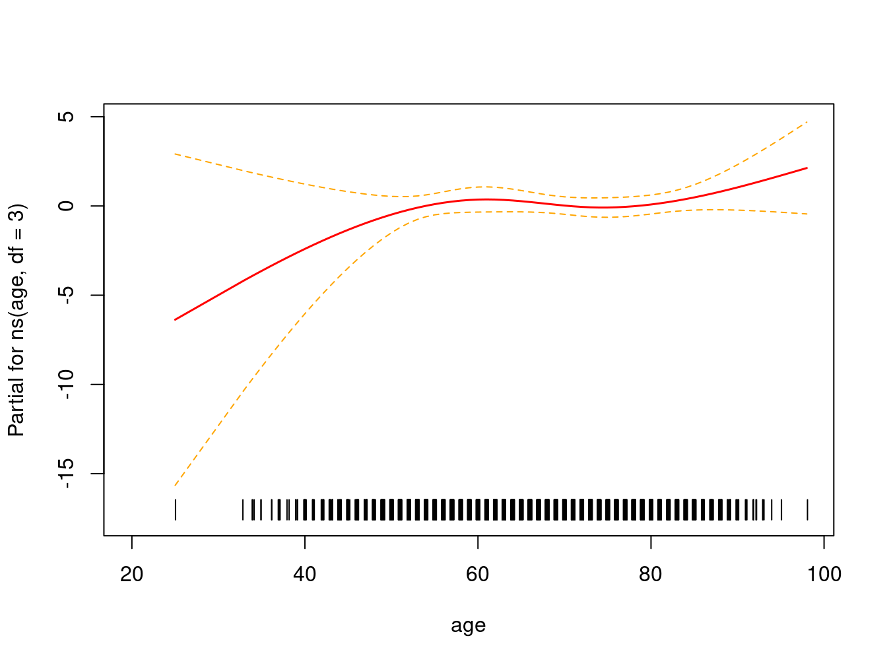
> summary(fit4)
Call:
glm(formula = dischargestatus01 ~ ns(age, df = 3), family = "binomial",
data = d1)
Deviance Residuals:
Min 1Q Median 3Q Max
-0.4171 -0.1704 -0.1521 -0.1415 3.2127
Coefficients:
Estimate Std. Error z value Pr(>|z|)
(Intercept) -10.895 4.758 -2.290 0.0220 *
ns(age, df = 3)1 2.789 2.489 1.120 0.2626
ns(age, df = 3)2 14.263 9.827 1.451 0.1467
ns(age, df = 3)3 4.356 2.441 1.784 0.0744 .
---
Signif. codes: 0 '***' 0.001 '**' 0.01 '*' 0.05 '.' 0.1 ' ' 1
(Dispersion parameter for binomial family taken to be 1)
Null deviance: 260.01 on 1999 degrees of freedom
Residual deviance: 256.00 on 1996 degrees of freedom
AIC: 264
Number of Fisher Scoring iterations: 8
> anova(fit4, test = "Chi")
Analysis of Deviance Table
Model: binomial, link: logit
Response: dischargestatus01
Terms added sequentially (first to last)
Df Deviance Resid. Df Resid. Dev Pr(>Chi)
NULL 1999 260.01
ns(age, df = 3) 3 4.0076 1996 256.00 0.2606
>
> # Test whether non-linearity is significant by comparing to linear model
> fit5 <- glm(dischargestatus01 ~ age, data = d1, family = "binomial")
> anova(fit5, fit4, test = "Chi")
Analysis of Deviance Table
Model 1: dischargestatus01 ~ age
Model 2: dischargestatus01 ~ ns(age, df = 3)
Resid. Df Resid. Dev Df Deviance Pr(>Chi)
1 1998 258.7
2 1996 256.0 2 2.7026 0.25892.2.7 Cox regression models
Assess which risk factors predict the endpoint tm2death.
> # First, a simple model for gender only
> fit6 <- coxph(Surv(tm2death, s.death) ~ gender, data = d1)
> summary(fit6)
Call:
coxph(formula = Surv(tm2death, s.death) ~ gender, data = d1)
n= 2000, number of events= 608
coef exp(coef) se(coef) z Pr(>|z|)
genderMale -0.2029 0.8163 0.0856 -2.371 0.0177 *
---
Signif. codes: 0 '***' 0.001 '**' 0.01 '*' 0.05 '.' 0.1 ' ' 1
exp(coef) exp(-coef) lower .95 upper .95
genderMale 0.8163 1.225 0.6902 0.9654
Concordance= 0.517 (se = 0.01 )
Likelihood ratio test= 5.49 on 1 df, p=0.02
Wald test = 5.62 on 1 df, p=0.02
Score (logrank) test = 5.64 on 1 df, p=0.02The broom package can be used with survival objects as well.
> # Look at a tidy model summary (data frame)
> tmp <- tidy(fit6, exponentiate = TRUE, conf.int = TRUE)
> print(tmp, digits = 3)
# A tibble: 1 x 7
term estimate std.error statistic p.value conf.low conf.high
<chr> <dbl> <dbl> <dbl> <dbl> <dbl> <dbl>
1 genderMale 0.816 0.0856 -2.37 0.0177 0.690 0.965
> glance(fit6)
# A tibble: 1 x 15
n nevent statistic.log p.value.log statistic.sc p.value.sc statistic.wald
<int> <dbl> <dbl> <dbl> <dbl> <dbl> <dbl>
1 2000 608 5.49 0.0191 5.64 0.0176 5.62
# … with 8 more variables: p.value.wald <dbl>, r.squared <dbl>,
# r.squared.max <dbl>, concordance <dbl>, std.error.concordance <dbl>,
# logLik <dbl>, AIC <dbl>, BIC <dbl>Here is how you would use modelsum() for Cox models.
> myform <- formulize(y = "Surv(tm2death, s.death)", x = covar2)
> tmp <- modelsum(myform, family = "survival", data = d1)
> summary(tmp, show.intercept = F, title = "Overall survival: Univariate analysis")| HR | CI.lower.HR | CI.upper.HR | p.value | concordance | Nmiss | |
|---|---|---|---|---|---|---|
| Age, yrs | 1.062 | 1.054 | 1.070 | < 0.001 | 0.663 | 0 |
| Gender Male | 0.816 | 0.690 | 0.965 | 0.018 | 0.517 | 0 |
| as.numeric(recentmi) | 1.093 | 1.024 | 1.167 | 0.008 | 0.550 | 28 |
| cardioshock Yes | 2.290 | 1.649 | 3.181 | < 0.001 | 0.526 | 4 |
| diabetes Yes | 2.207 | 1.876 | 2.597 | < 0.001 | 0.586 | 16 |
| hypertension Yes | 2.140 | 1.653 | 2.770 | < 0.001 | 0.546 | 72 |
| Body Mass Index (kg/sq.m) | 0.984 | 0.970 | 0.998 | 0.022 | 0.535 | 13 |
| currsmoker Yes | 0.659 | 0.514 | 0.845 | 0.001 | 0.525 | 68 |
| msrenaldis Yes | 4.026 | 3.116 | 5.202 | < 0.001 | 0.543 | 20 |
| Number of diseased vessels | 1.572 | 1.434 | 1.724 | < 0.001 | 0.607 | 18 |
| intrapostmi Yes | 1.028 | 0.672 | 1.573 | 0.899 | 0.503 | 0 |
You might also want to look at the functional form of age as it relates to the endpoint. The termplot() function is a quick way to see if there are indications that the relationship may be non-linear. Here we used the penalized spline pspline() with 4 degrees of freedom to look for non-linearity.
> fit7 <- coxph(Surv(tm2death, s.death) ~ pspline(age, df = 4), data = d1)
> termplot(fit7, se = TRUE, rug = TRUE)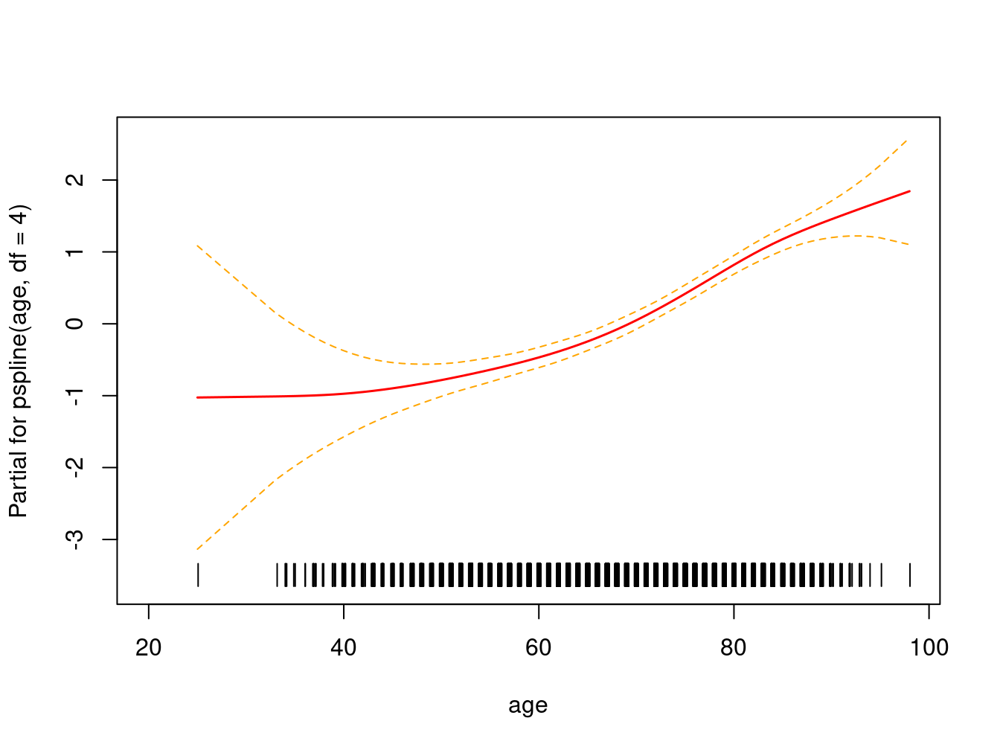
> fit7 # test linear and nonlinear portions of the fit for significance
Call:
coxph(formula = Surv(tm2death, s.death) ~ pspline(age, df = 4),
data = d1)
coef se(coef) se2 Chisq DF p
pspline(age, df = 4), lin 5.93e-02 3.69e-03 3.69e-03 2.58e+02 1.00 <2e-16
pspline(age, df = 4), non 9.61e+00 3.07 0.024
Iterations: 5 outer, 15 Newton-Raphson
Theta= 0.88
Degrees of freedom for terms= 4.1
Likelihood ratio test=269 on 4.07 df, p=<2e-16
n= 2000, number of events= 608
> anova(fit7) # overall test
Analysis of Deviance Table
Cox model: response is Surv(tm2death, s.death)
Terms added sequentially (first to last)
loglik Chisq Df Pr(>|Chi|)
NULL -4324.7
pspline(age, df = 4) -4190.1 269.33 4.0686 < 2.2e-16 ***
---
Signif. codes: 0 '***' 0.001 '**' 0.01 '*' 0.05 '.' 0.1 ' ' 1Finally, it is good to do some basic model checks on your results. The coefficient in a Cox model is an average of the estimated beta over all the event times. The proportional hazards model assumes that this coefficient is constant over time, however that is not always true. The cox.zph function creates time-dependent coefficients for more detailed examination. The printout of cox.zph summarizes the correlation of Beta(time) vs time for each variable. The plot of cox.zph visualizes the relationship. It is important to look at the plot to understand the summary.
In the coxph function, as with some (but not all) of the other model functions in R, there are several options for handling missing values. The default na.omit option and the na.exclude option both remove any missing values from the fit. They differ in that the former returns residuals only for the non-missing values and the latter returns residuals with the same number of rows as the input data. If you want to compare residuals to the original data then it is more convenient to use na.exclude (not the default); if you are going to calculate summaries such as quantiles then the former is more convenient because missing values will have been removed.
> # Change option because we will want to look at residuals later on
> options(na.action = na.exclude)
> fit8 <- coxph(Surv(tm2death, s.death) ~ age + gender + cardioshock, data = d1)
> zfit8 <- cox.zph(fit8)
>
> zfit8
chisq df p
age 40.0 1 2.5e-10
gender 1.5 1 0.22
cardioshock 27.6 1 1.5e-07
GLOBAL 65.3 3 4.3e-14
> plot(zfit8[3]) # look at 3rd variable, hard to view
> plot(zfit8[3], resid = FALSE) # plot without residuals
> abline(h = coef(fit8)[3], col = 2) # coef estimate
> abline(h = 0, col = 3)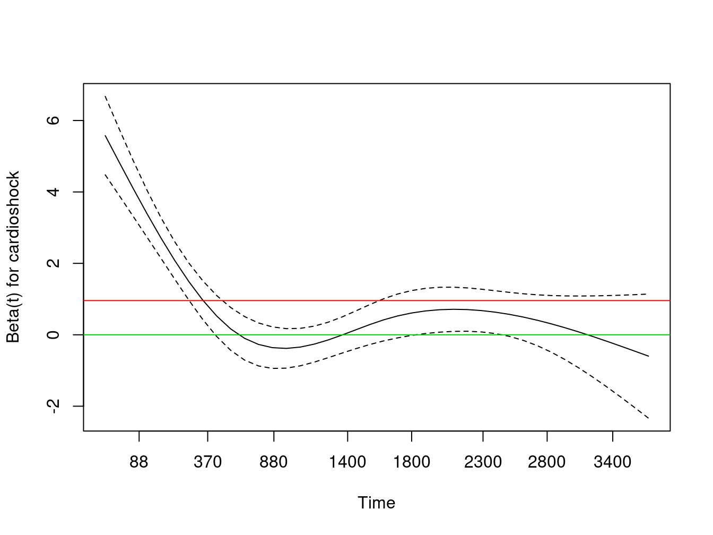
Based on this, it appears that we might need to treat early deaths (likely those in the hospital) different from those that appear after discharge. Perhaps we might want to start follow-up after discharge if that information is available.
Leverage points are also sometimes an issue. Dfbeta residuals offer one way to check for influential points. It allows you to see how much the estimate of Beta would change if one point was deleted.
> rr <- resid(fit8, type = "dfbeta")
> dim(rr)
[1] 2000 3
>
> # color by status - residuals are all in the 4th decimal so nothing too large
> plot(d1$age, rr[, 1], col = d1$s.death + 1)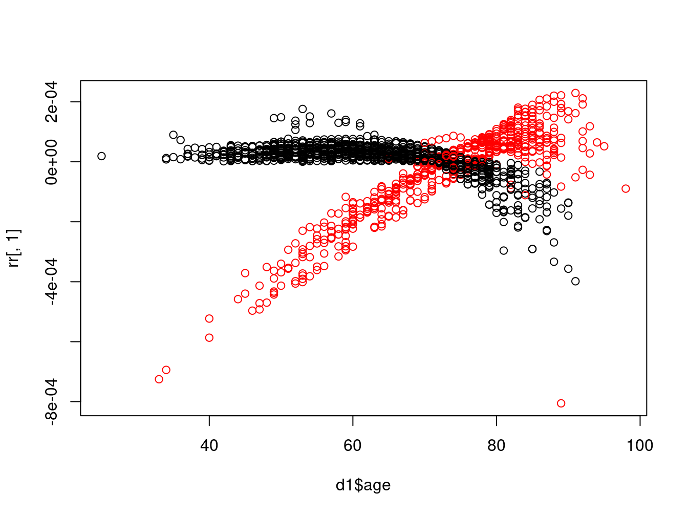
2.2.8 Missingness revisited: Imputation
There are multiple packages that do multiple imputation in R (see article for review). In the code below we’ve chosen to use the mice package (Multivariate Imputation via Chained Equations).
Recommendations: * need to include the endpoint in the imputation * if using multiple models/endpoints, just impute everything once including all the variables * imputing continuous variables is much easier than categorical - The default “mice” method is predictive mean matching (pmm) for numeric variables, logistic regression (logreg) for two level factors, polytomous regression (polyreg) for unordered categorical variables, and proportional odds regression (polyr) for ordered factors. You can also specify different methods for different variables within the same call. - The mice package does not like dates - Other methods for imputation are also available besides these defaults
> library(mice)
Attaching package: 'mice'
The following objects are masked from 'package:base':
cbind, rbind
> library(dplyr)
>
> # Create data frame 'sub' which excludes date variables, status variables and id
> sub <- d1 %>% select(-starts_with("dt"), -starts_with("s."), -id)
> # Create 5 imputed datasets
> imputed_d1 <- mice(sub, m = 5, printFlag = FALSE, set.seed = 123) # create 5 datasets, don't print log
Warning: Number of logged events: 3
>
> # fit multiple models with imputed data, then combine the results
> fits <- with(imputed_d1, glm(dischargestatus01 ~ diabetes, family = "binomial"))
>
> # Pool function combines the results of the 5 imputed datasets
> pool.fits <- pool(fits)
> summary(pool.fits)
term estimate std.error statistic df p.value
1 (Intercept) -4.3768615 0.2422715 -18.0659339 1662.3695 0.0000000
2 diabetesYes -0.1254765 0.4814559 -0.2606188 612.7132 0.7944741
> # fmi = fraction of information about the coefficients missing due to nonresponse
>
> # original value
> tidy(glm(dischargestatus01 ~ diabetes, data = d1, family = "binomial"))
# A tibble: 2 x 5
term estimate std.error statistic p.value
<chr> <dbl> <dbl> <dbl> <dbl>
1 (Intercept) -4.53 0.260 -17.5 3.13e-68
2 diabetesYes -0.0227 0.486 -0.0468 9.63e- 1This is fine for 1 variable, but what if you want to look at multiple models using the imputed data?
> # create a list with 5 elements, each housing one of the new datasets
> imp.list <- list()
> for (i in 1:5) {
+ tmp <- complete(imputed_d1, action = i)
+ imp.list[[i]] <- tmp
+ }
>
> # run modelsum on each element of the list, store as a dataframe (again an
> # element of a list)
> myform <- formulize(y = "dischargestatus01", x = covar)
>
> # Write function to return modelsum results as a data frame
> myfun <- function(x) {
+ fit <- modelsum(myform, family = "binomial", data = x, show.intercept = FALSE,
+ binomial.stats = c("estimate", "std.error", "p.value", "concordance", "Nmiss"))
+ return(as.data.frame(fit))
+ }
>
> # For each element in the list (each imputed dataset), run myfun()
> tmp <- lapply(imp.list, myfun)
> head(tmp[[1]])
y.term y.label strata.term adjustment model
1 dischargestatus01 dischargestatus01 unadjusted 1
2 dischargestatus01 dischargestatus01 unadjusted 2
3 dischargestatus01 dischargestatus01 unadjusted 3
4 dischargestatus01 dischargestatus01 unadjusted 3
5 dischargestatus01 dischargestatus01 unadjusted 3
6 dischargestatus01 dischargestatus01 unadjusted 4
term label term.type estimate std.error p.value
1 age Age, yrs Term 0.01982353 0.01757066 2.592280e-01
2 genderMale Gender Male Term 0.74084202 0.54987517 1.778864e-01
3 recentmi.L recentmi .L Term 1.77999512 0.46803433 1.428797e-04
4 recentmi.Q recentmi .Q Term 0.23067795 0.52772788 6.620277e-01
5 recentmi.C recentmi .C Term -0.27538557 0.58132374 6.356985e-01
6 cardioshockYes cardioshock Yes Term 4.57959159 0.48957295 8.418875e-21
concordance
1 0.5550038
2 0.5644399
3 0.7424089
4 0.7424089
5 0.7424089
6 0.8600709
>
> # look at coefficients from all the datasets
>
> # Create a list with the estimates from each model
> model.coef <- lapply(tmp, function(x) x$estimate)
>
> # use the cbind() function to bind the results together
> model.coef2 <- do.call(cbind, model.coef)
>
> # make this a dataframe
> model.coef3 <- data.frame(matrix(model.coef2, nrow = nrow(model.coef2), ncol = ncol(model.coef2)))
>
> # add in rownames for the variables
> rownames(model.coef3) <- tmp[[1]]$term
>
> # label each column as imp1--imp5
> colnames(model.coef3) <- paste0("imp", 1:5)
>
> # add in the mean of the 5 columns
> model.coef3$mean.est <- rowMeans(model.coef3)
>
> knitr::kable(model.coef3, digits = 3)| imp1 | imp2 | imp3 | imp4 | imp5 | mean.est | |
|---|---|---|---|---|---|---|
| age | 0.020 | 0.020 | 0.020 | 0.020 | 0.020 | 0.020 |
| genderMale | 0.741 | 0.741 | 0.741 | 0.741 | 0.741 | 0.741 |
| recentmi.L | 1.780 | 1.779 | 1.774 | 1.773 | 1.771 | 1.776 |
| recentmi.Q | 0.231 | 0.227 | 0.231 | 0.225 | 0.229 | 0.229 |
| recentmi.C | -0.275 | -0.286 | -0.265 | -0.274 | -0.274 | -0.275 |
| cardioshockYes | 4.580 | 4.368 | 4.580 | 4.368 | 4.580 | 4.495 |
| diabetesYes | -0.210 | 0.001 | -0.004 | -0.206 | -0.208 | -0.125 |
| hypertensionYes | -1.118 | -1.122 | -1.298 | -1.301 | -1.609 | -1.289 |
| bmi | -0.070 | -0.067 | -0.065 | -0.071 | -0.074 | -0.070 |
| currsmokerYes | 0.448 | 0.645 | 0.645 | 0.649 | 0.642 | 0.606 |
| msrenaldisYes | -0.127 | -0.127 | -0.116 | -0.127 | -0.116 | -0.123 |
| numdisvessels | 0.343 | 0.396 | 0.344 | 0.233 | 0.397 | 0.343 |
| intrapostmiYes | 0.863 | 0.863 | 0.863 | 0.863 | 0.863 | 0.863 |
2.3 Resources
2.3.1 Technical details
Report created: September 22 2020
> # Grab session info
> sessionInfo()
R version 3.6.2 (2019-12-12)
Platform: x86_64-pc-linux-gnu (64-bit)
Running under: CentOS Linux 7 (Core)
Matrix products: default
BLAS: /usr/lib64/libblas.so.3.4.2
LAPACK: /usr/lib64/liblapack.so.3.4.2
locale:
[1] LC_CTYPE=en_US.UTF-8 LC_NUMERIC=C
[3] LC_TIME=en_US.UTF-8 LC_COLLATE=C
[5] LC_MONETARY=en_US.UTF-8 LC_MESSAGES=en_US.UTF-8
[7] LC_PAPER=en_US.UTF-8 LC_NAME=C
[9] LC_ADDRESS=C LC_TELEPHONE=C
[11] LC_MEASUREMENT=en_US.UTF-8 LC_IDENTIFICATION=C
attached base packages:
[1] splines stats graphics grDevices utils datasets methods
[8] base
other attached packages:
[1] mice_3.10.0 broom_0.5.6 survminer_0.4.6 ggpubr_0.2.5
[5] magrittr_1.5 survival_3.2-5 rpart.plot_3.0.8 rpart_4.1-15
[9] naniar_0.5.0 summarytools_0.9.6 arsenal_3.4.0.9000 haven_2.2.0
[13] forcats_0.5.0 stringr_1.4.0 dplyr_1.0.0 purrr_0.3.4
[17] readr_1.3.1 tidyr_1.1.0 tibble_3.0.1 ggplot2_3.3.2
[21] tidyverse_1.3.0
loaded via a namespace (and not attached):
[1] nlme_3.1-145 matrixStats_0.56.0 fs_1.3.2 lubridate_1.7.4
[5] httr_1.4.1 tools_3.6.2 backports_1.1.6 utf8_1.1.4
[9] R6_2.4.1 mgcv_1.8-31 DBI_1.1.0 colorspace_1.4-1
[13] nnet_7.3-13 withr_2.1.2 tidyselect_1.1.0 gridExtra_2.3
[17] compiler_3.6.2 cli_2.0.2 rvest_0.3.5 formatR_1.7
[21] xml2_1.3.2 labeling_0.3 bookdown_0.18 scales_1.1.0
[25] checkmate_2.0.0 survMisc_0.5.5 digest_0.6.25 rmarkdown_2.1
[29] base64enc_0.1-3 pkgconfig_2.0.3 htmltools_0.5.0 highr_0.8
[33] dbplyr_1.4.2 rlang_0.4.7 readxl_1.3.1 rstudioapi_0.11
[37] pryr_0.1.4 farver_2.0.3 generics_0.0.2 zoo_1.8-7
[41] jsonlite_1.7.0 rapportools_1.0 Matrix_1.2-18 Rcpp_1.0.4
[45] munsell_0.5.0 fansi_0.4.1 lifecycle_0.2.0 visdat_0.5.3
[49] pROC_1.16.1 stringi_1.4.6 yaml_2.2.1 MASS_7.3-51.5
[53] plyr_1.8.6 grid_3.6.2 crayon_1.3.4 lattice_0.20-40
[57] pander_0.6.4 hms_0.5.3 magick_2.4.0 knitr_1.29
[61] pillar_1.4.4 tcltk_3.6.2 ggsignif_0.6.0 codetools_0.2-16
[65] reprex_0.3.0 glue_1.4.1 evaluate_0.14 data.table_1.12.8
[69] modelr_0.1.6 vctrs_0.3.2 cellranger_1.1.0 gtable_0.3.0
[73] km.ci_0.5-2 assertthat_0.2.1 xfun_0.15 xtable_1.8-4
[77] KMsurv_0.1-5 ellipsis_0.3.1 2.3.2 Packages used
2.4 Optional ways to code
2.4.1 Fit multiple models and store results
Sometimes the model you are fitting can’t be handled by modelsum. Here is some alternative code for looping through a set of variables and storing the results.
> ## how many are there?
> nvar <- length(covar)
>
> ## create matrix for storing results, label rows and columns
> fit.results <- matrix(NA, nrow = nvar, ncol = 4, dimnames = list(covar, c("N", "coef",
+ "std", "p.value")))
>
> ## loop through the variables
> for (i in 1:nvar) {
+
+ ## if the variable is in my dataset, proceed
+ if (!is.na(match(covar[i], names(d1)))) {
+
+ ## paste together the formula that I want to use
+ text <- paste("coxph(Surv(tm2death,s.death) ~ ", covar[i], " , data=d1)",
+ sep = "")
+ fit <- eval(parse(text = text))
+
+ ## pull off the summary, print
+ prob <- summary(fit)
+
+ ## pull off the coefficient and std.error (last row of fit)
+ fit.results[i, 2:4] <- prob$coef[nrow(prob$coef), c(1, 3, 5)]
+ fit.results[i, 1] <- prob$n
+ }
+ }2.4.2 Fit models “by” some variable
In SAS you can run a model “by” some variable, such as gender. In R you can do the same thing using the following code. The group_by() function tells R to run the analysis by that variable (or variables) and the do() function tells R what to do.
> ans <- d1 %>% group_by(gender) %>% do(tidy(coxph(Surv(tm2death, s.death) ~ age +
+ cardioshock, data = .data), exponentiate = T, confint = T))
> ans
# A tibble: 4 x 8
# Groups: gender [2]
gender term estimate std.error statistic p.value conf.low conf.high
<chr> <chr> <dbl> <dbl> <dbl> <dbl> <dbl> <dbl>
1 Female age 1.03 0.00636 5.41 6.27e- 8 1.02 1.05
2 Female cardioshockYes 1.73 0.298 1.83 6.65e- 2 0.963 3.10
3 Male age 1.08 0.00503 15.1 1.15e-51 1.07 1.09
4 Male cardioshockYes 3.26 0.203 5.83 5.65e- 9 2.19 4.86